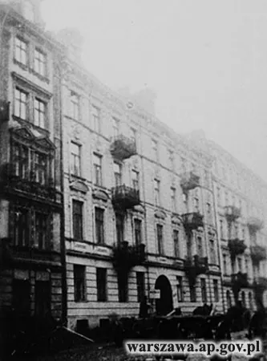
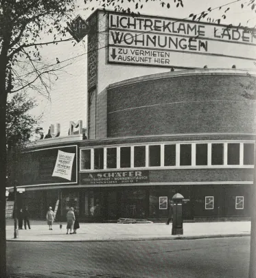
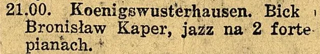
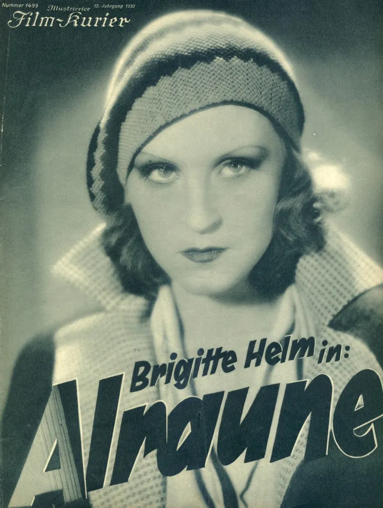
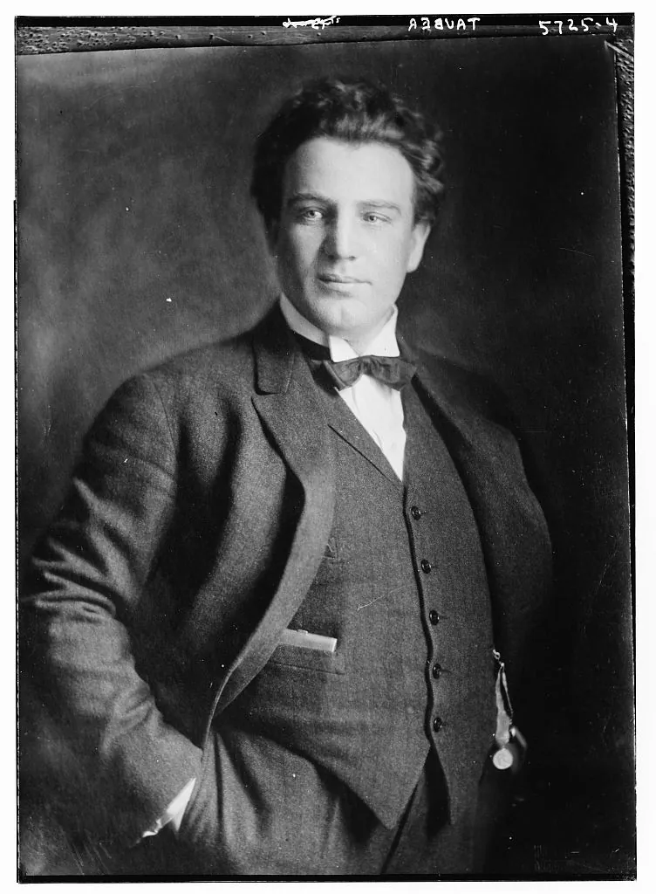
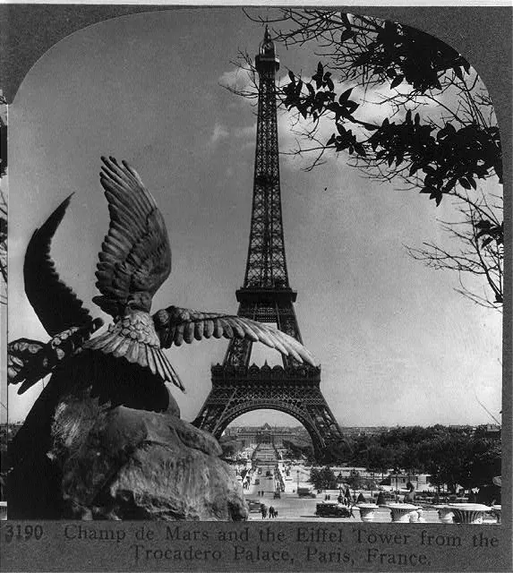
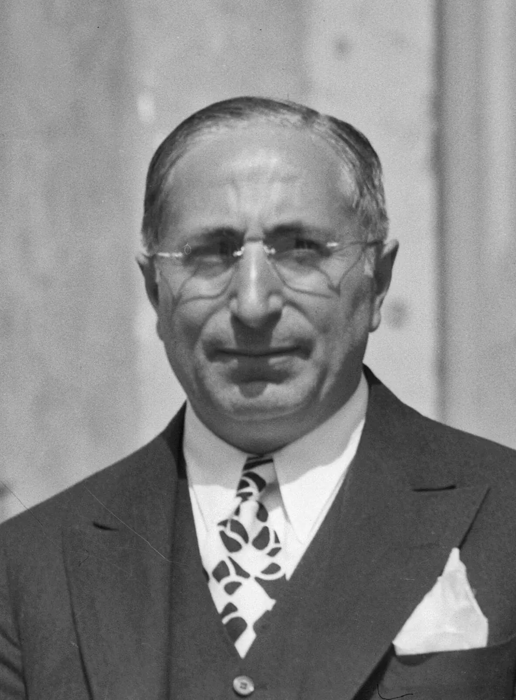
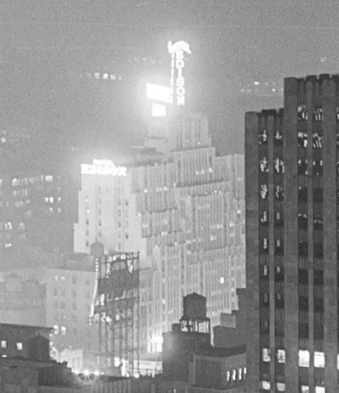

Milestone
Birth
23 January / 5 February 1902
Warsaw
Born in Warsaw to Szmul Moszek Kaper and Maria Mucha, in a Jewish family registered in the city’s non-Christian civil records.
Open event record
Documented chronology
56 published events reconstruct education, early composition, professional networks, European film work and Kaper’s arrival in the United States.
Formation · law studies · first compositions and songs
23 January / 5 February 1902
Warsaw
Born in Warsaw to Szmul Moszek Kaper and Maria Mucha, in a Jewish family registered in the city’s non-Christian civil records.
Open event record
Warsaw
After a one-semester delay, Kaper was formally matriculated at the University of Warsaw.
Open event record
Warsaw
Kaper performed Chopin in a public concert as a pupil of Józef Śmidowicz’s piano class.
Open event record
Berlin and Paris · recordings · cinema · the route to MGM
Warsaw; Berlin
Kaper left Warsaw for Berlin to continue his musical education and professional development.
Open event record
Berlin
Kaper recorded jazz-influenced piano-duo arrangements for Polydor with Hermann Biek, credited on the records as Hermann Bick.
Open event record
Berlin
For Alraune, Kaper contributed songs to an early sound film, rather than background scoring in the later Hollywood sense.
Open event record
Berlin
Fritz Rotter brought Kaper and Walter Jurmann together in 1931, beginning a partnership central to Kaper’s European film career.
Open event record
Berlin; Paris
As Nazi persecution intensified, Kaper and Jurmann left Berlin and travelled via Vienna to Paris.
Open event record
Paris
The European success of Ninon reportedly brought Kaper and Jurmann to the attention of Louis B. Mayer, leading to a meeting at the Hôtel Ritz and an MGM contract.
Open event record
New York; Los Angeles destination
Kaper arrived in New York from France with Eleonora on a temporary visa, travelling onward to Los Angeles.
Open event record
20 November – 8 December 1934
Hollywood/Los Angeles
American studio publicity recast Kaper and Jurmann as a Viennese composing team, turning “Vienna” into a promotional brand rather than a biographical fact.
Open event record
MGM · American film and song · continuing European networks
Hollywood/Los Angeles
Kaper made his Hollywood debut at MGM, contributing songs to Escapade and other studio films.
Open event record
Hollywood/Los Angeles
The title song from San Francisco became a major hit, while Kaper and Jurmann also contributed to Universal’s Three Smart Girls.
Open event record
Hollywood/Los Angeles
The European Film Fund was established in 1938 to aid refugees from the European film community; a later donor list documents Kaper’s involvement.
Open event recordHollywood/Los Angeles
Kaper remained at MGM and continued his career independently after the partnership with Jurmann ended.
Open event record